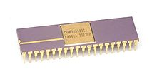

Advanced Micro Devices (AMD) is a multinational semiconductor company based in Santa Clara County, California, the United States that
develops computer processors and related technologies. Advanced Micro Devices (AMD) was founded on 1 May 1969.

In November 1969 Manufactured first Product, the AM9300: 4 bit MSI shift register. The selling of the product began a year later. After some
years, in September 1972 —AMD officially went public, then in 1975 AMD introduced Am9080 (2MHz – 4MHz), an 8-bit single-core processor with a
transistor count of 4,500. It was a reverse-engineered clone of the intel 8080, made by taking pictures of the intel 8080 die using a microscope.
The company placed a great emphasis on quality and grew steadily. In 1982 the company began supplying second-source chips for the Intel
Corporation, which made the microprocessor used in IBM personal computers (PCs). As a second source manufacturer, In 1976 intel licensed out x86
architecture to AMD which allows AMD to design and manufacture compatible CPUs.In 1996 AMD introduced the K5 processor on March 27, 1996, with
speeds of 75 MHz to 133 MHz and bus speeds of 50 MHz, 60 MHz, or 66 MHz. The K5 was the first processor developed completely in-house by AMD.
In 1997 AMD launched the K6 processor which comes out as a great processor in the CPU market. Due to their aggressive pricing, the caught
customer's attention. They continued this with their K7 processor, which was known as ATHLON, on June 23, 1999. It was a great competitor of
Pentium III at the time. AMD first released the Duron processor on June 19, 2000, with speeds of 600 MHz to 1.8 GHz and bus speeds of 200 MHz to 266
MHz. The Duron was built on the same K7 architecture as the Athlon processor. But in 2003 AMD made a massive contribution by rolling out x86-64
architecture a feature of K8 series, AMD released the first Athlon 64 processor, the 3200+ model, and the first Athlon 64 FX processor, the FX-51
model, on September 23.